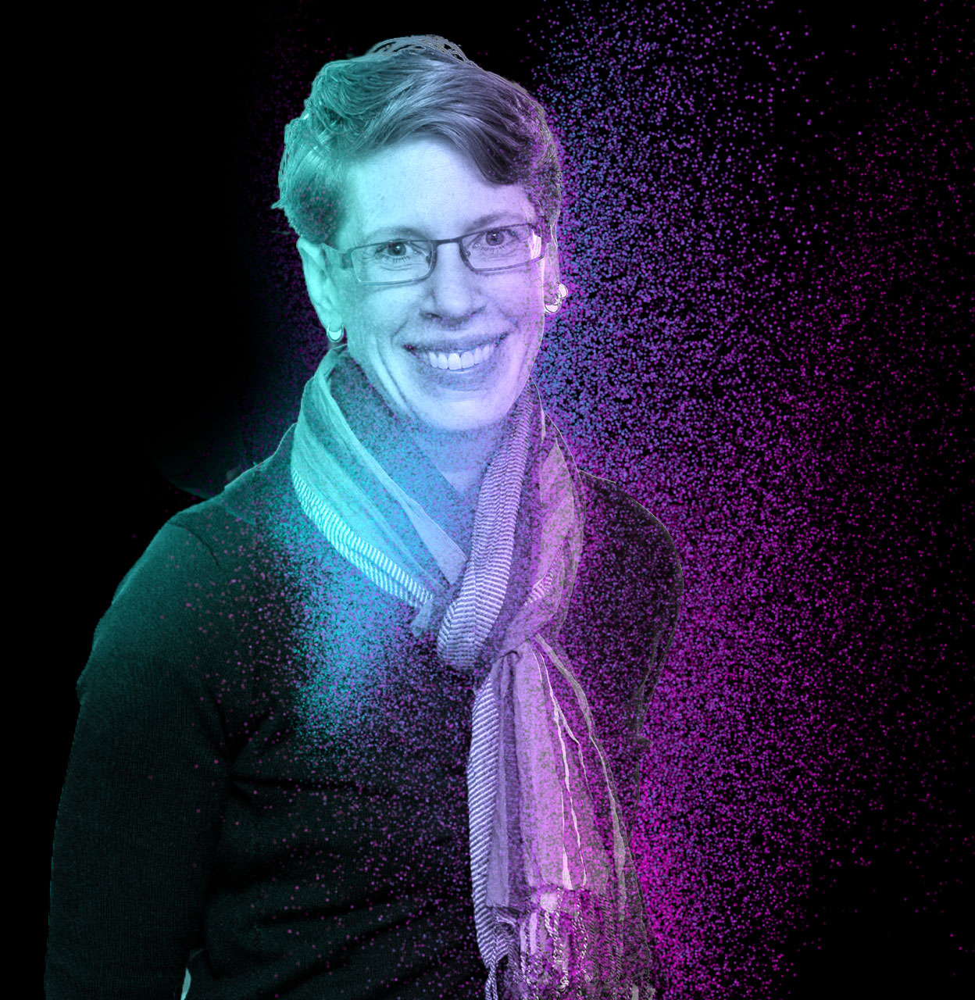

Christine Heitsch is the Founding Director of the Southeast Center for
Mathematics and Biology, one of four national NSF-Simons MathBioSys
research centers inaugurated in 2018. She is Professor of Mathematics
at Georgia Tech, with courtesy appointments in both Biological Sciences
and Computational Science & Engineering. Following her PhD in Mathematics
from UC Berkeley, she was a postdoctoral fellow in theoretical computer
science at UBC and in computational biology at UW Madison.
Her research sits at the interface of the mathematical, computational,
and biological sciences, and is supported by both NSF and NIH. She is
an expert in the combinatorics of RNA folding, with research publications
in all three disciplines. Recognitions include a Career Award at the
Scientific Interface from the Burroughs Wellcome Fund and an Alumni
Achievement Award from the UIUC Department of Mathematics.